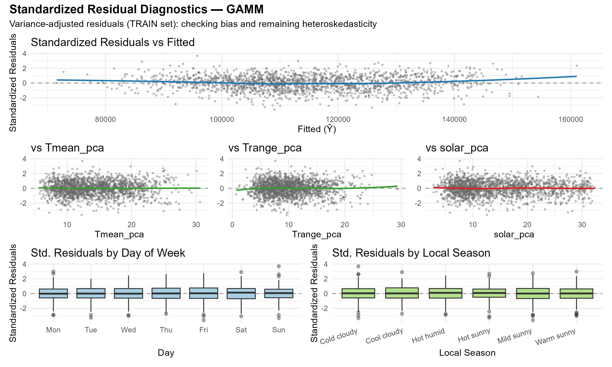

A Data-Driven Local Season Approach using GAMM
The Victorian electricity market is transforming rapidly — driven by:
Rising weather sensitivity in demand, requiring more adaptive, weather-dependent forecasting.
For SEC and other gentailers, accurate short-term demand forecasts are critical for:
Goal: build a robust, interpretable, and flexible model for Victoria’s evolving load.

Figure: Rooftop PV Installations in Victoria (FY2014–FY2025)
Rapid post-2018 growth driven by the Solar Homes Program.
Temperature–demand is nonlinear (U-shaped patterns) and seasonally asymmetric.
Solar–demand relationship is more variable and complex, with stronger interactions and higher volatility.
Structural Break (2019)
Overall grid demand declines while intra-season variability widens after the PV surge.

Seasonal Divergence
Fixed calendar seasons miss true weather regimes — PV suppresses summer/spring load but winter demand still rises.
✅ Data-driven seasonal boundaries
✅ Better alignment with temperature–solar dynamics

Local-Season Clusters — Weather Profiles
| Cluster | Tmax (°C) | Tmin (°C) | Solar (MJ/m²) | Interpretation | Suggested Label |
|---|---|---|---|---|---|
| 1 | 13.0 | 6.1 | 7.1 | Cool days, low solar — likely cloudy winter/autumn | 🌥 Cold & Cloudy |
| 2 | 20.5 | 11.4 | 20.2 | Mild temps, high solar — likely early summer/spring | ☀️ Warm & Bright |
| 3 | 26.9 | 12.0 | 28.3 | Hot and very sunny — likely peak summer conditions | 🔥 Hot & Very Sunny |
| 4 | 26.5 | 11.0 | 18.1 | Hot but lower solar — likely cloudy summer | 🌡 Hot & Partly Cloudy |
| 5 | 15.5 | 3.1 | 10.1 | Cold days, clear sky — likely sunny winter | ❄️ Cold & Sunny |
| 6 | 17.5 | 9.7 | 10.9 | Mild days, moderate solar — likely autumn transition | 🍂 Mild & Transitional |


🔹 GAMM Forecast

| Metric | GAM (Local Season) | GAMM | Δ Improvement |
|---|---|---|---|
| RMSE (MW) | 4 743 | 4 682 | −61 MW (↓ 1.3 %) |
| MAPE (%) | 3.25 | 3.21 | −0.04 pp (↓ 1.2 %) |
| R² | 0.936 | 0.943 | +0.007 (↑ 0.7 %) |
| Ljung–Box (14, 28) | ✅ Pass | ✅ Pass | - |
✅ GAMM enhances both accuracy and residual independence
🔹 GAMM Standardized Residuals

✅ Weighted variance structure improves stability across local seasons
| Horizon | R² | RMSE (MW) | MAPE (%) |
|---|---|---|---|
| 3-day | 0.91 | 2 602 | 1.7 |
| 7-day | 0.95 | 4 061 | 2.5 |
| 30-day | 0.88 | 4 520 | 2.5 |
| 365-day | 0.94 | 4 682 | 3.2 |

GAMM Forecast vs Actual (1-Month Window)
Captures winter cycles; minor underestimation of peaks